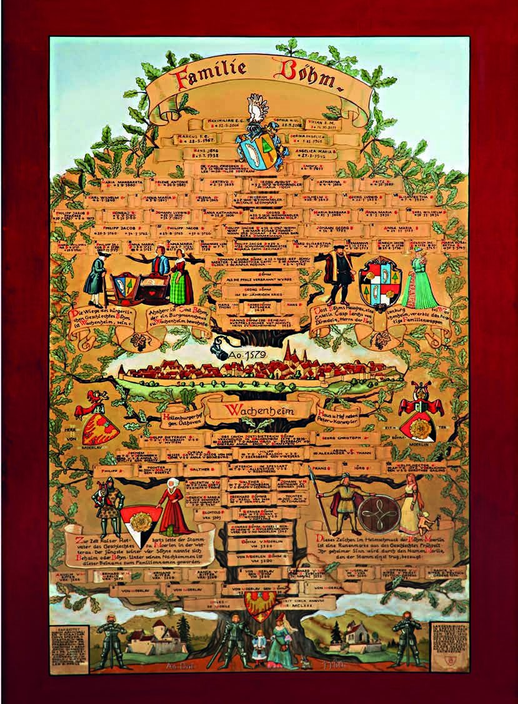
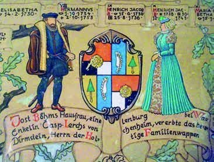
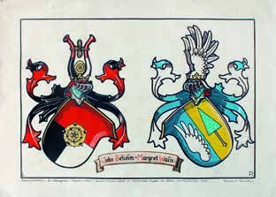
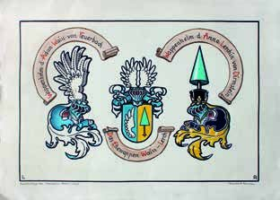
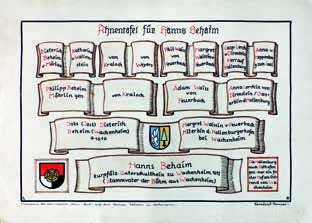
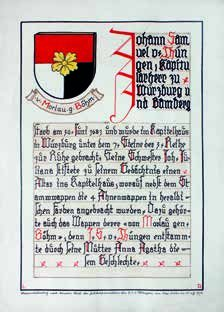
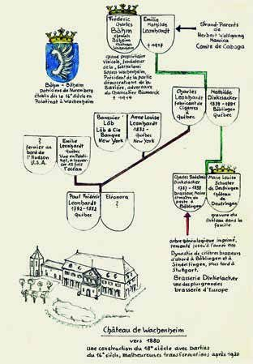
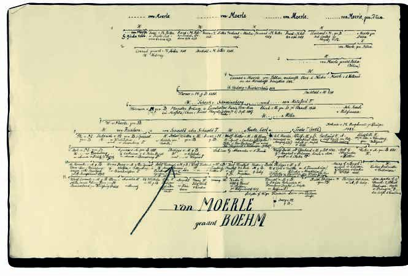

I. Die Zeit vor der Gründerfamilie · Kapitel 3
Bestehende Studien zur Ahnenforschung mit Stammbaum
Bestehende Studien der Familie zur Ahnenforschung
Der Stammbaum wurde 1935/40 von Leonhard Renner nach Unterlagen des Staatsarchivs und der Landesbibliothek Speyer, sowie vom den Archiven von Wachenheim und Dirmstein erstellt.
Da erst mit der Bauernbefreiung im 19ten Jahrhundert die letzten Reste der de facto „Sklaverei“ der Unfreien, – sei dies die Leibeigenschaft, oder Gutsuntertänigkeit -, im Zuge der Aufklärung überwunden und dann auch abgeschafft worden war, entstand bei manchen Emporgekommenen der Wunsch, dem Adel zu entstammen. Gerade im ländlichen Bereich suchte das neu aufkommende, konservative Grossbürgertum sich dergestalt zu profilieren, um als politischer Gesprächspartner, im konservativen Sektor anerkannt zu werden, ohne hierzu in eine sozialistische Bewegung eintreten zu müssen. Der vom Nationalsozialismus provozierte Wunsch des Nichtsemiten-Nachweises, war sicherlich ein weiterer Grund.
In diesem Sinne ist es interessant zu wissen, dass der Stamm Stuber (vielleicht der wohlhabendste Familienzweig) in noch intensiverer Form dem Traum der noblen Herkunft nachgegangen ist, wie später noch beschrieben wird.
Es folgt ein Auszug der Böhmschen Genealogie, Teil des von Herbert Stuber de Caboga, dem Sohn von Katharina genannt Käthi geb. Böhm erstellten Stammbaum. Es ist nicht bekannt in wie weit darüberhinaus die anderen Familienzweige Ahnenkunde betrieben haben, die über die unmittelbaren Vorfahren hinausging.
Zuordnung der Wappen nach vorliegendem Stammbaum: Bis Philip Böhm in der Wetterau wurde das Wappen der Mörlen genannt Böhm (Schwarzweiss-rotes Schild mit goldner Tournierrose; sowie der Helmschmuck mit Morillenrune) verwendet. Mit Jobs Dietr. Böhm, der sich auf dem Hollenburger Hof, Wingen in der Pfalz niederlässt, wird das Wappen des Schwiegervaters Adam Weiss von Feuerbach übernommen (linkes Feld weisser Flügel der Weiss von Feuerbach, rechter Flügel die grünen Lärche der Lerch von Dirmstein).
Die verschiedene Wappen der Familie Böhm
Oben: Darstellung durch Herbert de Caboga Unten: Anderer Böhm’scher Adelsnachweis, unbekannter Herkunft
Morille- Rune im Helmschmuck der Böhm Mörlen Wappen der Böhm Mörlen (2 Bilder oben) Wappen der Ehefrau Jobs Dieterich Böhm (2 Bilder darunter) Das “missing link” im Böhm’schen Stammbaum







